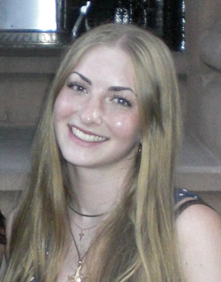

Undergraduate Student at Rutgers University
Major: Marketing | Minor: Psychology
I am an undergraduate marketing student at Rutgers University with a potential minor in psychology, focused on leveraging creative strategy, AI tools, and research to drive effective communication and insights.
Conducted an in-depth academic inquiry project evaluating post-college career paths available to students. Focused research on comparing four-year university degrees against two-year degrees within the business landscape. Iteratively refined the research scope through source analysis, concluding with a comprehensive essay examining personal pathways as a business student.
Research Sources & References:Researched future job outcomes for marketing majors, evaluating realistic career trajectories alongside public relations industry trends. Evaluated AI summaries and interactive chat responses to test accuracy and analyze how AI is shaping the future of marketing roles. Concluded the project by conducting targeted outreach on LinkedIn to connect with industry practitioners.
Project Resources & AI Logs: